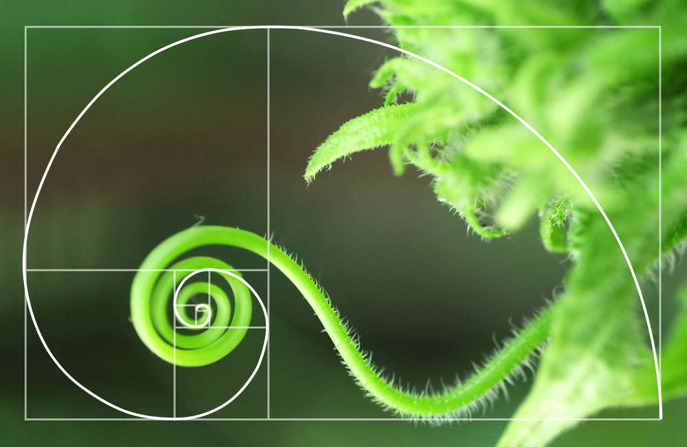
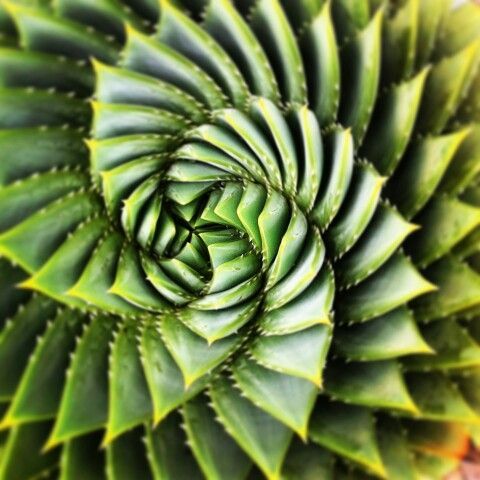
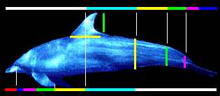
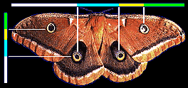
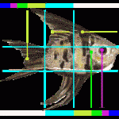

Plants are complex structures, changing their shapes in response to environmental factors such as sunlight, water and neighboring plants. However, some mathematical rules can be found in their growth patterns, one of which is the golden section. The golden section can be observed in branching systems, phyllotaxis, flowers and seeds, and often the spiral arrangement of plant organs. In this study, tree, flower and fruit models have been generated by using the corresponding golden section characteristics, resulting in more natural patterns. Furthermore, the golden section can be found in the bifurcate angles of trees and lobed leaves, extending the golden section theory Bonnet saw that tree branches and leaves had a mathematical spiral pattern that could be shown as a fraction. Plant branch structure is complex, and there is a large diversity of forms among different species. Nevertheless, plant branching systems can be defined as major kinds: Single-axis patterns: such as poplar or pine trees. Here the apical meristematic tissue retains energy, which results in the main stem being of a higher status with respect to growth, while the lateral branches are inferior. This makes the plant shape high and straight. Mature trees have six or more branches and growth direction, the angle between the two neighbors is about 135° and the angle between the main stem and each branch is close to 34.4° which is the golden section of 90° ((90 − 33.4)/90 = 0.618). Within 20 poplars, for every 100 branches, 79 branches satisfy this rule. This angle may be advantageous for leaves to absorb light and optimize the rate of photosynthesis.
 There are many examples of the Golden Section or Divine Proportion in nature. The eye, fins and tail all fall at golden sections of the length of a dolphin’s body. The dimensions of the dorsal fin are golden sections (yellow and green). The thickness of the dolphin’s tail section corresponds to same golden section of the line from head to tail.
The eye-like markings of this moth fall at golden sections of the lines that mark its width and length.
Every key body feature of the angel fish falls at golden sections of its width and length. The nose, tail section, and centers of the fins of the angel fish fall at first (blue) golden sections. The second golden section (yellow) defines the indents on the dorsal and tail finds as well as the top of the body. The green section defines the marking around the eye and the magenta section defines the eye.
